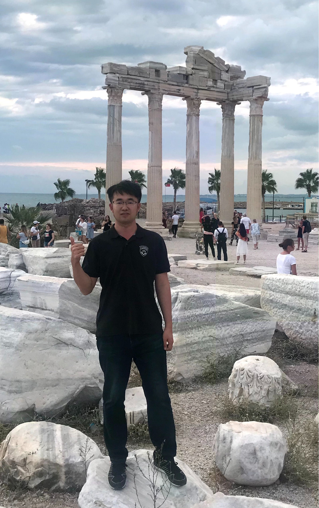

|  |
高万夫, 副教授, 博士生/硕士生导师 |
吉林大学计算机科学与技术学院College of Computer Science and Technology, Jilin UniversityE-mail: gaowf@jlu.edu.cnGoogle Scholar DBLP JLU Homepage |
[1] 待补充论文信息
[1] W Gao, L Hu, P Zhang. Class-specific mutual information variation for feature selection, Pattern Recognition 79, 2018. (CCF B类, 中科院1区, ESI高被引, 引用172次)
[2] P Zhang, G Liu, W Gao. Distinguishing two types of labels for multi-label feature selection, Pattern recognition 95, 2019. (CCF B类, 中科院1区, ESI高被引, 引用152次)
[3] L Hu, W Gao, K Zhao, P Zhang, F Wang. Feature selection considering two types of feature relevancy and feature interdependency, Expert Systems with Applications 93, 2018. (中科院1区, 引用149次)
[4] W Gao, L Hu, P Zhang, J He. Feature selection considering the composition of feature relevancy, Pattern Recognition Letters 112, 2018. (CCF C类, 中科院3区, 引用110次)
[5] W Gao, Y Li, L Hu. Multilabel feature selection with constrained latent structure shared term, IEEE Transactions on Neural Networks and Learning Systems 34 (3), 2023. (CCF B类, 中科院1区, 引用102次)
[6] Y Li, L Hu, W Gao. Multi-label feature selection via robust flexible sparse regularization, Pattern Recognition 134, 2023. (CCF B类, 中科院1区, 引用100次)
[7] L Hu, L Gao, Y Li, P Zhang, W Gao. Feature-specific mutual information variation for multi-label feature selection, Information Sciences 593, 2022. (CCF B类, 中科院1区, 引用98次)
[8] L Hu, Y Li, W Gao, P Zhang, J Hu. Multi-label feature selection with shared common mode, Pattern Recognition 104, 2020. (CCF B类, 中科院1区, 引用97次)
[9] J Hu, Y Li, W Gao, P Zhang. Robust multi-label feature selection with dual-graph regularization, Knowledge-Based Systems 203, 2020. (中科院1区, 引用88次)
[10] W Gao, L Hu, P Zhang, F Wang. Feature selection by integrating two groups of feature evaluation criteria, Expert Systems with Applications 110, 2018. (中科院1区, 引用80次)
[11] W Gao, L Hu, P Zhang. Feature redundancy term variation for mutual information-based feature selection, Applied Intelligence 50 (4), 2020. (CCF C类, 中科院2区, 引用75次)
[12] P Zhang, G Liu, W Gao, J Song. Multi-label feature selection considering label supplementation, Pattern recognition 120, 2021. (CCF B类, 中科院1区, 引用58次)
[13] Y Li, L Hu, W Gao. Robust sparse and low-redundancy multi-label feature selection with dynamic local and global structure preservation, Pattern Recognition 134, 2023. (CCF B类, 中科院1区, 引用52次)
[14] W Gao, P Hao, Y Wu, P Zhang. A unified low-order information-theoretic feature selection framework for multi-label learning, Pattern Recognition 134, 2023. (CCF B类, 中科院1区, 引用50次)
[15] Q Han, L Hu, W Gao. Feature relevance and redundancy coefficients for multi-view multi-label feature selection, Information Sciences 652, 2024. (CCF B类, 中科院1区, 引用46次)
[16] J Hu, Y Li, G Xu, W Gao. Dynamic subspace dual-graph regularized multi-label feature selection, Neurocomputing 467, 2022. (CCF C类, 中科院2区, 引用46次)
[17] P Zhang, W Gao, J Hu, Y Li. Multi-label feature selection based on the division of label topics, Information Sciences 553, 2021. (CCF B类, 中科院1区, 引用44次)
[18] P Zhang, W Gao. Feature relevance term variation for multi-label feature selection, Applied Intelligence 51 (7), 2021. (CCF C类, 中科院2区, 引用40次)
[19] P Zhang, W Gao. Feature selection considering uncertainty change ratio of the class label, Applied Soft Computing 95, 2020. (引用39次)
[20] P Zhang, W Gao, J Hu, Y Li. A conditional-weight joint relevance metric for feature relevancy term, Engineering Applications of Artificial Intelligence 106, 2021. (引用38次)
[21] Y Li, L Hu, W Gao. Label correlations variation for robust multi-label feature selection, Information Sciences 609, 2022. (CCF B类, 中科院1区, 引用37次)
[22] Y Li, L Hu, W Gao. Multi-label feature selection with high-sparse personalized and low-redundancy shared common features, Information Processing & Management 61 (3), 2024. (引用36次)
[23] W Gao, J Hu, Y Li, P Zhang. Feature redundancy based on interaction information for multi-label feature selection, IEEE Access 8, 2020. (引用27次)
[24] P Zhang, W Gao, J Hu, Y Li. Multi-label feature selection based on high-order label correlation assumption, Entropy 22 (7), 2020. (引用27次)
[25] P Zhang, W Gao, G Liu. Feature selection considering weighted relevancy, Applied Intelligence 48 (12), 2018. (CCF C类, 中科院2区, 引用26次)
[26] W Gao, L Hu, Y Li, P Zhang. Preserving similarity and staring decisis for feature selection, IEEE Transactions on Artificial Intelligence 2 (6), 2021. (引用25次)
[27] B Wang, X Li, C Li, S Wang, W Gao. Escaping the neutralization effect of modality features fusion in multimodal fake news detection, Information Fusion 111, 2024. (中科院1区, 引用24次)
[28] P Hao, W Gao, L Hu. Embedded feature fusion for multi-view multi-label feature selection, Pattern Recognition 157, 2025. (CCF B类, 中科院1区, 引用21次)
[29] P Hao, L Hu, W Gao. Partial multi-label feature selection via subspace optimization, Information Sciences 648, 2023. (CCF B类, 中科院1区, 引用21次)
[30] X Zhang, Z Wang, L Jiang, W Gao, P Wang, K Liu. TFWT: Tabular Feature Weighting with Transformer, IJCAI 2024. (CCF A类, 引用20次)
[31] P Hao, K Liu, W Gao. Double-layer hybrid-label identification feature selection for multi-view multi-label learning, Proceedings of the AAAI Conference on Artificial Intelligence 38 (11), 2024. (CCF A类, 引用15次)
[32] Y Wang, L Hu, W Gao, X Cao, Y Chang. AdaNS: Adaptive negative sampling for unsupervised graph representation learning, Pattern Recognition 136, 2023. (CCF B类, 中科院1区, 引用11次)
[33] P Hao, W Ding, W Gao, J He. Exploring view-specific label relationships for multi-view multi-label feature selection, Information Sciences 681, 2024. (CCF B类, 中科院1区, 引用10次)
[34] P Zhang, J Sheng, W Gao, J Hu, Y Li. Multi-label feature selection method based on dynamic weight, Soft Computing 26 (6), 2022. (引用10次)
[35] J Zhang, X Wang, F Mo, Y Zhou, W Gao, K Liu. Entropy-based Exploration Conduction for Multi-step Reasoning, ACL 2025. (CCF A类, 引用9次)
[36] Q Han, L Hu, W Gao. Integrating label confidence-based feature selection for partial multi-label learning, Pattern Recognition 161, 2025. (CCF B类, 中科院1区, 引用8次)
[37] Y Li, J Hu, W Gao. Robust multi-label feature selection with shared label enhancement, Knowledge and Information Systems 64 (12), 2022. (引用8次)
[38] Y Wang, L Hu, Y Wu, W Gao. Graph multihead attention pooling with self-supervised learning, Entropy 24 (12), 2022. (引用8次)
[39] W Gao, L Hu, P Zhang. Feature selection by maximizing part mutual information, Proceedings of the 2018 International Conference on Signal Processing, 2018. (引用6次)
[40] W Zhang, J He, C Ma, W Gao, G Li. Compound fault diagnosis method of rotating machinery using multi-view multi-label feature selection based on label compression and local label correlation, Advanced Engineering Informatics 65, 2025. (中科院1区, 引用5次)
[41] Y Li, X Wang, X Yang, W Gao, W Ding, T Li. Fusion-enhanced multi-label feature selection with sparse supplementation, Information Fusion 117, 2025. (中科院1区, 引用5次)
[42] J He, W Huang, Y Liu, C Qian, C Ma, W Gao, X Jin. Data imbalance fault diagnosis method based on an ensemble multi-scale convolutional attention network, Mechanical Systems and Signal Processing 236, 2025. (中科院1区, 引用4次)
[43] J He, Z Ma, Y Liu, C Ma, W Gao. Remaining useful life prediction of lithium-ion battery based on improved gated recurrent unit-generalized Cauchy process, Journal of Energy Storage 126, 2025. (中科院1区, 引用4次)
[44] P Hao, K Liu, W Gao. Uncertainty-Aware Global-View Reconstruction for Multi-View Multi-Label Feature Selection, AAAI 2025. (CCF A类, 引用4次)
[45] Q Han, Z Zhao, L Hu, W Gao. Enhanced multi-label feature selection considering label-specific relevant information, Expert Systems with Applications 264, 2025. (中科院1区, 引用4次)
[46] P Hao, K Liu, W Gao. Anchor-guided global view reconstruction for multi-view multi-label feature selection, Information Sciences 679, 2024. (CCF B类, 中科院1区, 引用4次)
[47] W Gao, H Pan. Multi-label feature selection based on min-relevance label, IEEE Access 11, 2022. (引用4次)
[48] Y Wang, L Hu, W Gao. Learning flexible network representation via anonymous walks, Knowledge-Based Systems 222, 2021. (引用4次)
[49] L Ma, L Hu, Y Li, W Ding, W Gao. MI-MCF: A Mutual Information-Based Multilabel Causal Feature Selection, IEEE Transactions on Neural Networks and Learning Systems, 2025. (CCF B类, 中科院1区, 引用3次)
[50] H Pan, K Liu, W Gao. Rethinking Feature Structure Information and Latent Space Alignment in Partial Multi-label Feature Selection, AAAI 2025. (CCF A类, 引用2次)
[51] 李永豪, 胡亮, 高万夫. 基于稀疏系数矩阵重构的多标记特征选择, 计算机学报 45 (9), 2022. (引用2次)
[52] 刘杰, 张平, 高万夫. 基于条件相关的特征选择方法, 吉林大学学报 (工学版) 48 (3), 2018. (引用2次)
[53] S Zhang, Y Li, P Zhang, W Gao. Exploring multi-label feature selection via feature and label information supplementation, Engineering Applications of Artificial Intelligence 159, 2025. (引用1次)
[54] Q Han, W Zhang, C Ma, J He, W Gao. Robust Multilabel Feature Selection With Label Enhancement for Fault Diagnosis, IEEE Transactions on Systems, Man, and Cybernetics: Systems, 2025. (引用1次)
[55] W Gao, H Pan, Q Han, K Liu. Noise-Resistant Label Reconstruction Feature Selection for Partial Multi-Label Learning, IJCAI 2025. (CCF A类, 引用1次)
[56] 李永豪, 胡亮, 张平, 高万夫. 基于动态图拉普拉斯的多标签特征选择, Journal on Communication/Tongxin Xuebao 41 (12), 2020. (引用1次)
[57] 高万夫, 张平, 胡亮. 基于已选特征动态变化的非线性特征选择方法, 吉林大学学报 (工学版) 49 (4), 2019. (引用1次)
[58] 高万夫. 基于序列前向选择策略的过滤算法研究, 长春:吉林大学, 2019. (引用1次)
[59] X Li, H Fu, X Huang, T Xie, L Ren, W Gao, Y Li, X Yang. Negative Label-Aware and Correlation-Enhanced Multi-Label Feature Selection, Knowledge-Based Systems, 2025.
[60] Q Han, R Shi, L Hu, W Gao. Multi-label feature selection based on positive sample information weighting, Knowledge-Based Systems, 2025.
[61] W Gao, J Gao, Q Han, H Pan, K Liu. Graph Random Walk with Feature-Label Space Alignment: A Multi-Label Feature Selection Method, IJCAI 2025. (CCF A类)
[62] W Gao, Z Man, Z He, Y Tang, J Gao, K Liu. Two-Stage Feature Generation with Transformer and Reinforcement Learning, IJCAI 2025. (CCF A类)
[63] W Gao, Z Man, H Pan, K Liu. Dual-Agent Reinforcement Learning for Automated Feature Generation, IJCAI 2025. (CCF A类)
[64] X Li, Y Dai, Z Yang, J Chi, W Gao, LY Wu. Utterance-level Emotion Recognition in Conversation with Conversation-level Supervision, Proceedings of the AAAI Conference on Artificial Intelligence 39 (23), 2025. (CCF A类)
[65] B Wang, B Zhao, X Li, C Li, W Gao, S Wang. Collaboration and Controversy Among Experts: Rumor Early Detection by Tuning a Comment Generator, SIGIR 2025. (CCF A类)
[66] P Hao, P Zhang, Q Feng, W Gao. Label generation with consistency on the graph for multi-label feature selection, Information Sciences 677, 2024. (CCF B类, 中科院1区)
[67] Y Li, H Yu, X Huang, P Zhang, H Pan, W Gao. Rethinking Multi-Label Feature Selection Via Adaptive Skeleton Construction, SSRN 5339513.
[68] Y Li, H Pan, Y Feng, X Huang, P Zhang, X Qi, W Gao. Exploring Sparse Multi-Label Feature Selection Using Causal Mechanism, SSRN 5208790.
[69] W Gao. Embracing Causal Relationships with Stability Analysis for Multi-Label Feature Selection.
说明：以上共70篇论文，包括近五年发表的60余篇论文，其中中国计算机学会A/B类期刊和会议、IEEE Transactions系列、中科院1区等40余篇，2篇ESI高被引论文，总引用2000余次。完整论文列表请访问 DBLP 或 Google Scholar。